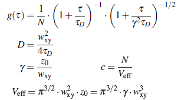

$$qf_commondoc_header.start$$ $$qf_commondoc_header.end$$
Usage
- The button allows to estimate the focus parameter wxy from the results of an FCS fit and some supplied and known values.
- Select one of the two tabs, depending on whether you know the diffusion coefficient or the concentration of your sample
- Enter the known data about your sample and an estimate of the error of this value.
- Check whether the value for wxy in the dialog makes sense and if so accept it, pressing "OK"
$$qf_commondoc_backtop$$
Background & Derivation

As one-focus FCS measurements lack an intrinsically well known "ruler" (e.g. the distance between two pixels or two foci), we have to establish the size of the focus by a calibration measurement. To do so, use a dye with a known diffusion coefficient or known concentration in your solution. Then you do an FCS measurement of this dye free in solution and fit a simple FCS model for normal diffusion to the acquired curve. Finally you can use this tool to estimate the size of the focus wxy:
- from a known diffusion coefficient
 in units of μ2/s:
in units of μ2/s:
The focus parameter wxy (in nanometer) can now be calculated using the diffusion time τD (in microseconds) from the fit:

with: 
- from a known concentration
 in units of nM (nanomolar):
in units of nM (nanomolar):
The focus parameter wxy (in nanometer) can now be calculated using the particle number N and the focus axial ratio γ from the fit:


The derivation of these equations uses a value of NA=6.02214179×1023 for avogadro's number. Here is a list of some dyes usually used for focus calibration:
| Dye | Diffusion coefficient [μ2/s] | environment | excitation max. | emission max. | Ref |
|---|
| Alexa-488 | 435 | 22.5°C in H2O | 494nm | 517nm | [1] |
| | 585 | 37°C in H2O | 494nm | 517nm | [1] |
| Alexa-546 | 341 | 22.5°C in H2O | 554nm | 570nm | [2] |
| EGFP | 95 | 22.5°C in 100mM phosphate-citrate buffer @ pH=7.5 | 489nm | 508nm | [2] |
| Rhodamine 6G | 426 | 22.5°C in H2O | 529.75nm | 555nm | [2] |
| Fluorescein | 436 | 22.5°C in H2O | 485nm | 514nm | [2] |
The equations above can be derived using the standard FCS normal diffusion model for a gaussian focus:

$$qf_commondoc_backtop$$
References:
[1] N. Dross, C. Spriet, M. Zwerger, G. Müller, W. Waldeck, and J. Langowski. Mapping EGFP oligomer mobility in living cell nuclei. PLoS ONE, 4(4):e5041, 2009.
http://www.dkfz.de/Macromol/publications/files/Dross2009.pdf.
[2] Z. Petrásek and P. Schwille. Precise measurement of diffusion coefficients using scanning fluorescence correlation spectroscopy. Biophysical Journal, 94:1437–1448, 2008.
http://www.pubmedcentral.nih.gov/picrender.fcgi?artid=2212689&blobtype=pdf.